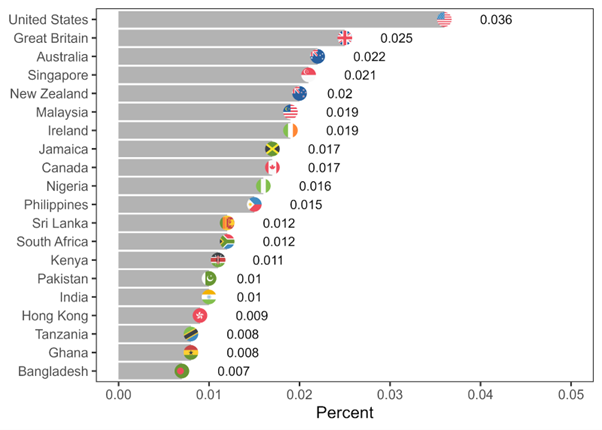

library(dplyr)
library(ggplot2)
library(readr)
library(tidyr)
library(SnowballC)
library(knitr)
library(purrr)
#Load dataset
bad_words <- read_csv("bad_words.csv")
#Create lookup table for language names
lang_lookup <- tibble::tibble(
language_code = c("ar","cs","da","de","en","eo","es","fa","fi","fil",
"fr","fr-CA-u-sd-caqc","hi","hu","it","ja","kab","ko",
"nl","no","pl","pt","ro","ru","sv","th","tlh","tr","zh"),
language_name = c("Arabic","Czech","Danish","German","English","Esperanto",
"Spanish","Persian (Farsi)","Finnish","Filipino","French",
"French (Canada - Quebec)","Hindi","Hungarian","Italian",
"Japanese","Kabyle","Korean","Dutch","Norwegian","Polish",
"Portuguese","Romanian","Russian","Swedish","Thai","Klingon",
"Turkish","Chinese")
)
#Join language names
bad_words_named <- bad_words %>%
left_join(lang_lookup, by = "language_code")
#Remove duplicates and missing values
cleaned <- bad_words_named %>%
distinct() %>%
drop_na(language_code)Example Analysis
This analysis investigates the use and presence of “bad” or naughty words across languages. Are there common trends? Which languages have the most or fewest words? How do the words vary in length and structure?
Research Question
How do “bad” words vary across languages and categories, and which languages or regions have the most extensive word lists?
Intended Audience
This analysis is aimed at anyone curious about language variation in swear words.
Data Source
Data were obtained from the Liquidata “Bad Words” dataset on DoltHub(“Liquidata/Bad-Words” 2020).
See the data dictionary: Data dictionary
Note
Contains lists of “bad words” from over 30 languages.
Each record includes the word, language, category, and severity rating.
Useful for text moderation, NLP, or studying linguistic variation.
Data Preparation
We start by loading packages and the dataset, then cleaning it to remove duplicates and missing values. Language codes are converted into readable names in the newly added column ‘language_name’ for clarity.
Total Bad Words by Language
We first count the total number of words per language to see which languages have the largest collections.
words_per_language <- cleaned %>%
count(language_name, sort = TRUE)
#Bar plot
ggplot(words_per_language, aes(x = reorder(language_name, n), y = n)) +
geom_col(fill = "purple") +
coord_flip() +
labs(
title = "Total Number of Bad Words per Language",
x = "Language",
y = "Number of Words"
) +
theme_minimal()
Note
The results of my analysis are similar, but not exactly matching, to the ones published in this 2025 paper on vulgarity by Schweinberger and Burridge(Schweinberger and Burridge 2025). This study was done on vulgarity in online communication, while my chosen dataset is on language composition. 
English and French have the most swear words. This may be due to cultural factors, media influence, informal speech traditions, and global reach of these languages.
Swearing is shaped by culture and the loosening of formality in language
Media, online forums and more forms of social connection which extend cultural reach may be at the root of the increase in swear words for these two language.
Other cultural differences may be involved; such as traditions of informal speech and satire
sources: (Janschewitz 2012), (Cassella 2022), (“Oh, Sh*t! Which Country Swears the Most Online? ARDC” n.d.)
Languages with the most and last swear words
We examine the top 10 and bottom 10 languages to compare them side by side.
top_languages <- words_per_language %>% slice_max(n, n=10) %>% mutate(group="Most")
bottom_languages <- words_per_language %>% slice_min(n, n=10) %>% mutate(group="Least")
combined <- bind_rows(top_languages, bottom_languages)
max_n <- max(combined$n)
ggplot(combined, aes(x = reorder(language_name, n), y = n, fill = group)) +
geom_col() +
coord_flip() +
facet_wrap(~group, scales = "free_y") +
scale_y_continuous(limits=c(0, max_n)) +
scale_fill_manual(values=c("Most"="purple","Least"="pink")) +
labs(
title = "Comparison of Top and Bottom Languages by Number of Bad Words",
x = "Language",
y = "Number of Words",
fill = "Group"
) +
theme_minimal()
Longest Bad Word Per Language
I was interested in determining the longest word for each language. We look at the longest word for each language to explore the extremes in word length.
top_words_per_lang <- cleaned %>%
group_by(language_name) %>%
slice_max(nchar(bad_word), n=1, with_ties=FALSE) %>%
ungroup() %>%
select(language_name, bad_word)
knitr::kable(top_words_per_lang, caption="Longest Bad Word Per Language")| language_name | bad_word |
|---|---|
| Arabic | احتلام |
| Chinese | 我操你祖宗十八代 |
| Czech | do prdele |
| Danish | kussekryller |
| Dutch | voor jan-met-de-korte-achternaam |
| English | rosy palm and her 5 sisters |
| Esperanto | fekfikanto |
| Filipino | anak ka ng puta |
| Finnish | kuin esterin perseestä |
| French | avoir les rideaux qui collent aux fenêtres |
| French (Canada - Quebec) | tabarnak |
| German | schwanzlutscher |
| Hindi | teri maa ka boba chusu |
| Hungarian | legkibaszottabb |
| Italian | caccati in mano e prenditi a schiaffi |
| Japanese | プリンス アルバート ピアス |
| Kabyle | iwellaqen |
| Klingon | ghuy’cha’ |
| Korean | 미친새끼 |
| Norwegian | faen i helvete |
| Persian (Farsi) | kiram too roohe aval va akharet |
| Polish | do kurwy nędzy |
| Portuguese | braulio de borracha |
| Romanian | bagami-as picioarele |
| Russian | promudobl’adsksya pizdopro’ebina |
| Spanish | Fiesta de salchichas |
| Swedish | dra åt helvete |
| Thai | หญิงชาติชั่ว |
| Turkish | siktirir siktirmez |
Word Length Statistics
We calculate the shortest, longest, median, and mean lengths of words per language.
cleaned <- cleaned %>% mutate(word_length = nchar(bad_word))
word_length_summary <- cleaned %>%
group_by(language_name) %>%
summarise(
shortest = min(word_length),
longest = max(word_length),
median_length = median(word_length),
mean_length = mean(word_length),
.groups = 'drop'
)
ggplot(word_length_summary, aes(x = reorder(language_name, longest))) +
geom_segment(aes(xend = language_name, y = shortest, yend = longest), color = "violet", size = 1) +
geom_point(aes(y = longest), color = "purple", size = 3) +
geom_point(aes(y = shortest), color = "pink", size = 3) +
coord_flip() +
labs(
title = "Shortest and Longest Bad Words per Language",
x = "Language",
y = "Word Length (Characters)",
caption = "Lollipop chart showing range of word lengths per language"
) +
theme_minimal()Warning: Using `size` aesthetic for lines was deprecated in ggplot2 3.4.0.
ℹ Please use `linewidth` instead.
Common Roots and Stems
Next, we explore recurring word roots to see which patterns appear most frequently.
WARNING: this section includes the root of many swears, only expand if you are okay with graphic language
Warning
# Languages supported by SnowballC
supported_langs <- c("da", "nl", "en", "fi", "fr", "de", "hu", "it", "no", "pt", "ro", "ru", "es", "sv")
# Add a column for stemmed words, stemming when language is supported
bad_words_stemmed <- cleaned %>%
mutate(
stem = map2_chr(
bad_word,
language_code,
~ if (.y %in% supported_langs) {
tryCatch(wordStem(.x, language = .y), error = function(e) substr(.x, 1, 4))
} else {
substr(.x, 1, 4)
}
),
root = substr(stem, 1, 4)
)
# Summarize across *all* languages
root_summary <- bad_words_stemmed %>%
group_by(language_name, stem) %>%
summarise(count = n(), .groups = "drop") %>%
filter(count > 2) %>%
arrange(stem, desc(count))
# Display table
root_summary %>%
select(language_name, stem, count) %>%
knitr::kable(caption = "Most Common Roots of Bad Words Across All Languages")| language_name | stem | count |
|---|---|---|
| Turkish | amcı | 12 |
| Persian (Farsi) | bach | 5 |
| Hungarian | balfasz | 4 |
| English | bitch | 3 |
| Esperanto | bugr | 3 |
| French | chi | 4 |
| Hindi | chod | 3 |
| Hindi | choo | 7 |
| Persian (Farsi) | chos | 4 |
| Hindi | chud | 5 |
| Hindi | chut | 12 |
| English | cocksuck | 5 |
| French | con | 3 |
| Hungarian | csöcs | 4 |
| French | cul | 3 |
| English | cum | 3 |
| English | cuntlick | 3 |
| English | cyberfuck | 5 |
| Persian (Farsi) | daha | 4 |
| English | ejacul | 6 |
| French | emmerd | 4 |
| French | encul | 5 |
| French | enfoir | 3 |
| English | fag | 3 |
| Hungarian | fasz | 4 |
| Hungarian | faszfej | 4 |
| Esperanto | fiki | 4 |
| Hungarian | fing | 4 |
| English | fingerfuck | 6 |
| English | fistfuck | 7 |
| Esperanto | forf | 4 |
| Hungarian | franc | 4 |
| English | fuck | 5 |
| Hindi | gaan | 4 |
| English | gangbang | 3 |
| Hungarian | gec | 4 |
| Persian (Farsi) | goh | 3 |
| Turkish | götl | 6 |
| Turkish | götv | 12 |
| Persian (Farsi) | jend | 3 |
| Hindi | jhan | 6 |
| Turkish | kalt | 12 |
| Persian (Farsi) | keer | 6 |
| Persian (Farsi) | khaa | 3 |
| Persian (Farsi) | kira | 20 |
| Persian (Farsi) | koon | 9 |
| Persian (Farsi) | kos | 10 |
| Persian (Farsi) | koss | 5 |
| Norwegian | kuk | 3 |
| English | kum | 3 |
| Hungarian | kuraf | 4 |
| Hindi | kutt | 5 |
| Hindi | lund | 8 |
| Persian (Farsi) | mada | 9 |
| English | masterb | 3 |
| English | masturb | 3 |
| French | merd | 3 |
| Swedish | moon | 4 |
| English | mothafuck | 7 |
| English | motherfuck | 7 |
| Hindi | naja | 3 |
| Persian (Farsi) | nane | 6 |
| Polish | obci | 3 |
| Turkish | oros | 12 |
| Turkish | otuz | 12 |
| Persian (Farsi) | peda | 6 |
| Polish | pier | 6 |
| English | piss | 4 |
| English | pussi | 4 |
| Hungarian | pöcs | 4 |
| Hindi | rand | 3 |
| Persian (Farsi) | reed | 3 |
| Hindi | saal | 4 |
| Persian (Farsi) | sag | 3 |
| Turkish | saks | 12 |
| German | scheiss | 3 |
| Hungarian | segg | 4 |
| Hungarian | seggfej | 4 |
| English | sexual | 3 |
| Persian (Farsi) | shas | 3 |
| English | shit | 5 |
| English | shite | 4 |
| Turkish | siki | 3 |
| Turkish | sikl | 6 |
| Turkish | sikt | 4 |
| Italian | stronz | 3 |
| Norwegian | ståpikk | 3 |
| Hindi | suar | 3 |
| Hungarian | szar | 5 |
| Filipino | tang | 3 |
| Turkish | taşa | 12 |
| Hindi | teri | 4 |
| Persian (Farsi) | tokh | 3 |
| Finnish | vitu | 3 |
| German | wichs | 3 |
| Turkish | yara | 12 |
| Turkish | Çing | 11 |
| Persian (Farsi) | کون | 3 |
Additional Analyses
Average Word Length
avg_length <- cleaned %>%
group_by(language_name) %>%
summarise(avg_length = mean(nchar(bad_word)), .groups="drop")
ggplot(avg_length, aes(x=reorder(language_name, avg_length), y=avg_length)) +
geom_col(fill="darkviolet") +
coord_flip() +
labs(title="Average Length of Bad Words by Language", x="Language", y="Average Characters") +
theme_minimal()
Range of Word Lengths
# Violin plot of word lengths per language
ggplot(cleaned, aes(x = reorder(language_name, word_length, FUN = median), y = word_length)) +
geom_violin(fill = "darkviolet", alpha = 0.7, color = "violet") +
stat_summary(fun = median, geom = "point", shape = 23, size = 2, fill = "skyblue") +
coord_flip() +
labs(
title = "Distribution of Bad Word Lengths per Language",
x = "Language",
y = "Word Length (Characters)",
caption = "Median shown as yellow diamond"
) +
theme_minimal()
Unique Roots Per Language
bad_words_stemmed <- cleaned %>%
mutate(stem = wordStem(bad_word)) %>%
mutate(root = substr(bad_word, 1, 4)) # crude root approximation
unique_roots_all <- bad_words_stemmed %>%
group_by(language_name) %>%
summarise(unique_roots = n_distinct(stem), .groups = "drop")
ggplot(unique_roots_all, aes(x = reorder(language_name, unique_roots), y = unique_roots)) +
geom_col(fill = "darkviolet") +
coord_flip() +
labs(
title = "Number of Unique Roots per Language (All Languages Included)",
x = "Language",
y = "Number of Unique Roots"
) +
theme_minimal()
Summary
Across the dataset, English and French have the largest number of bad words, while some less widely spoken languages have far fewer entries. Word length varies widely, with some languages having extremely long or short words. Analysis of roots reveals patterns in how words are formed, and recurring stems highlight common linguistic structures. These insights could be valuable for NLP applications, content moderation, or cultural linguistic studies.
Functions
Functions Used
dplyr: group_by(), summarise(), mutate(), filter(), arrange(), count(), distinct(), drop_na(), left_join(), bind_rows(), slice_max(), slice_min()
ggplot2: geom_col(), geom_violin(), geom_point(), facet_wrap(), coord_flip(), labs(), theme_minimal(), scale_fill_manual(), geom_segment()
knitr: kable()
SnowballC: wordStem()
References
Cassella, Carly. 2022. “Most Swear Words Have a Common Feature, Even Across Different Languages.” ScienceAlert. https://www.sciencealert.com/most-swear-words-have-a-common-feature-even-across-different-languages.
Janschewitz, Timothy Jay and Kristin. 2012. “The Science of Swearing.” APS Observer 25 (April). https://www.psychologicalscience.org/observer/the-science-of-swearing.
Schweinberger, Martin, and Kate Burridge. 2025. “Vulgarity in Online Discourse Around the English-Speaking World.” Lingua 321 (July): 103946. https://doi.org/10.1016/j.lingua.2025.103946.